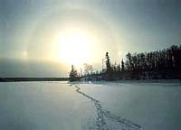

|
|
|

Fish are extremely successful in
the evolutionary world. They have adapted to a variety of waters
and occupy almost all waterbodies throughout the world. They can be found at the deepest ocean depths, where no light penetrates and no vegetation grows, to hot pools of water where temperatures exceed 30 degrees Celsius. Some species have adapted to life in very little water, living in mud and gulping air, having developed 'lungs'. Fish survive in saltwater, freshwater and some species can adapt to both environments, returning to freshwater from saltwater to spawn.
|
Fish come in all sizes, from the
smallest, like the guppies sold in pet stores, to the larger,
elusive sturgeon, found in our Saskatchewan waters. Bright colored fish can be found in tropical environments, while less bright, but just as magnificent looking species are found in our province. The arctic grayling is one of the most colorful of Saskatchewan fish, worth seeing if you are able to catch one!
|

Fish predators and fish prey cohabitate in Saskatchewan waterbodies, having adapted to the often cold surroundings. Fish are cold-blooded, meaning that their body
temperature is regulated by the surrounding environment. Few fish
can survive the extremes in temperature found in this area of
the country, one of the main determining factors of the type of
fish that live here.
|
There are several fish species
living in the waterbodies in Saskatchewan.
A species is a genetically distinct group, consisting of related individuals that resemble each other in appearance and behavior, and can breed among themselves but not, with some exceptions, with other species. Closely related species are grouped together in genera, and related genera are grouped into families.
Common names of fish can vary from one region or country to another. For example, in Saskatchewan, the walleye is commonly referred to as the pickerel and the northern pike is called a jackfish.
Biologists refer to organisms by their scientific names to
avoid confusion. The scientific name of a species is made up
of two words, usually derived from Latin -- the
first defines the genus, the second defines the species. The
following examples illustrate the use of both common and scientific nomenclature.
| Common Name |
Scientific Name |
| brown trout |
Salmo trutta
|
| northern pike |
Esox lucius |
Note that the scientific names are to be
italicized and that the genus is capitalized. This is the proper
way to designate the genus-species name for any organism. Underlining
may be used in place of italics.
There are about 22 000 known species
of fish. Only a few of these are of interest to Saskatchewan
anglers and commercial fishermen. Check out the fish species chart for more detail!
|